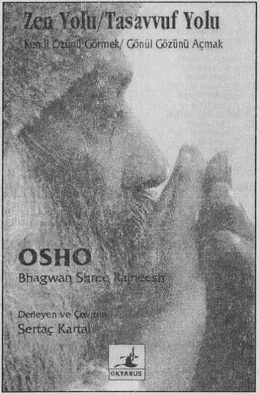

İşte size aydınlanmayı gerçekleştirmiş, uçsuz bucaksız bir içsel yaşantıya, uçsuz bucaksız bir bilgeliğe erişmiş bir ustanın, Osho’nun, Zen ve Tasavvuf üzerine yaptığı söyleşilerden derlenmiş yetkin bir kitap.
Kendi özünü görmek/Gönül gözünü açmak isteyip de Yol’a çıkmış yolcular için...